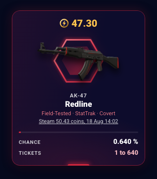
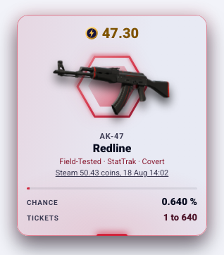

AK-47RedlineField-Tested · StatTrak · CovertSteam 50.43 coins, 18 Aug 14:02
Chance0.640 %
Tickets1 to 640
One item of What is in this case: its value in coins first and largest, the skin in its tier's ring, the gun, the skin and its wear and grade, then the chance and its tickets of the 100 000, over a line of the 100 000 with the item's stretch lit. Everything on this page is drawn by design/system/components/drop-card.css through index.css, the same file a screen will load.
Chance0.640 %
Tickets1 to 640
The card holds four atoms and never redraws them: the Figure (the value, .fig--money at .fig--title), the Media slot (the skin, .media--skin), the Text link (the market line, .link--quiet) and the Key-value line (the chance and the tickets, .kv--fact). The card's own part is its shape and its tier: the ground, the bar on its foot, the line of the 100 000 and the lit stretch on it, the ring and the fill the tier draws round the skin, and how it places and sizes the four.
| Part | Class or element | What to change there |
|---|---|---|
| The card | .drop-card.drop-card--r1 to --r7 (an <article>) | the tier colour, the ground in the tier, the corner (--radius-m), the lift under the pointer; the five grid areas |
| Value | .fig.fig--money.fig--title.drop-card__v (Figure) | the size is the Figure's (--title on the card, --m on the row); the 6px gap to the coin and the coin's size are the card's |
| Skin and ring | .media.media--skin.drop-card__art (Media slot) with .drop-card__plate and .drop-card__ring | the tier's fill and its hexagon ring lit from the top left; the skin grows and turns under the pointer |
| Name | .drop-card__name with __w, __s, __ax | the gun, the skin, the wear and grade tinted by the tier |
| Market line | .link.link--quiet.drop-card__mkt (Text link) | where the price was read; the colour, the underline and the hover are the link's, the card only places and sizes it |
| Chance | .kv.kv--fact.drop-card__ch (Key-value line) | the label left, the figure right, over the line of the 100 000 (the card's ::before, lit between --a and --b) |
| Tickets | .kv.kv--fact.drop-card__t | the same line; the tier tints its figure (--kv-tint); the key wraps over the figure in a narrow card |
| Tier bar | .drop-card::after | the short bar on the foot in the tier's colour and light |
| Spoken words | .drop-card__sr | the unit the figure leaves to a screen reader ("coins") |
One axis of data and one of form. The tier is the item's, not the screen's: it colours the ring, the bars, the edge and the light under the pointer, and a screen never chooses it. Widths and heights are read from the rendered cards, not from the stylesheet.
--r1 the rarest to --r7 the commonest; v4 lights tier 4 and 5 a step brighter on the dark card, so they read --bg-rarity-4-lit and --bg-rarity-5-lit.--row), the value over the skin on the left and the words on the right; the fit form (--fit) is the row's look under 600px, where the data table gives it the whole width and the markup cannot change with the viewport. The Figure's size follows the form: --title on the card, --m on the row, and the fit form switches to 18px by its own rule.
Chance0.040 %
Tickets1 to 40
Chance0.640 %
Tickets1 to 640

Chance2.100 %
Tickets1 791 to 3 890

Chance6.000 %
Tickets3 891 to 9 890

Chance20.000 %
Tickets9 891 to 29 890

Chance30.000 %
Tickets29 891 to 59 890
Chance40.000 %
Tickets59 891 to 99 890
Chance0.640 %
Tickets1 to 640
Chance6.000 %
Tickets3 891 to 9 890
Chance2.100 %
Tickets1 791 to 3 890
To show one item a case can pay, so a person can judge the chance before spending: its value in coins, its tier, its chance and the tickets that win it, out of the 100 000 each round draws. This is the proof the case screen owes: published chance and current value at the moment of spending are what answer the doubt people record (design principle 1), and cost and odds are legible where money is about to be spent (principle 3). The figures on this page are samples (D-124); a value or a market price that cannot be read is drawn as a missing Figure, never as a zero.
What is in this case: one card per item, by tier, in the Data table's rows on a phone and in the card grid on a desktop. The chance is the Key-value line, the market line is a quiet Text link, the skin is a Media slot.
A drop that already happened is a Recent drop card (who won it) or a Feed tile (the live ticker). An item a person holds is an Item card. A case is a Case tile. A prize on the outcome screen is an Outcome card. A figure alone is a Figure; a line of facts alone is a Key-value line.
Live at rest, on this page's theme: point at the card. The market line takes the Text link's own hover and focus ring; the card adds none for it. Nothing else in the card takes focus, so the card has no focus state of its own.
Chance0.640 %
Tickets1 to 640
Snapshots of the same instance, dark on the left and light on the right, taken with reduced motion so each shows the face the state settles on. The base set is shot once on the card; the row and the fit form answer the same.


--depth-card-hover, --bg-rarity-2, --line-edgenode design/kit/tools/shoot-states.js http://localhost:8765/ drop-card # re-shoot after a change to drop-card.css or its tokens node design/kit/tools/shoot-states.js http://localhost:8765/ drop-card --check # step 9: fails if a snapshot drifted
| Token | Kind | Dark | Light |
|---|
Read live from tokens.css. The card needs no component token: every state found its role. Geometry, type and motion come from the primitives and the block (--drop-card-row-art, --drop-card-row-art-h). The lift under the pointer reads the state token --depth-card-hover, made once in round 2 for this card and the Recent drop card (D-265). No colour primitive is read. The tier ring's white is --bg-mark-on-plate, which stays white in both themes.
File: design/system/components/drop-card.css, loaded by design/system/index.css in the molecules' group.
<article class="drop-card drop-card--r2" style="--a: 0; --b: 0.64"> <span class="fig fig--money fig--title drop-card__v"><span class="fig__v"><span class="icon icon--coin"></span>47.30<span class="drop-card__sr"> coins</span></span></span> <span class="media media--skin drop-card__art"><span class="drop-card__plate"></span><svg class="drop-card__ring">...</svg><img src="..." alt=""></span> <h4 class="drop-card__name"><span class="drop-card__w">AK-47</span><span class="drop-card__s">Redline</span><span class="drop-card__ax">Field-Tested · Covert</span><a class="link link--quiet drop-card__mkt" href="...">Steam 50.43 coins</a></h4> <p class="kv kv--fact drop-card__ch"><span class="kv__k">Chance</span><span class="kv__v">0.640 %</span></p> <p class="kv kv--fact drop-card__t"><span class="kv__k">Tickets</span><span class="kv__v">1 to 640</span></p> </article>
Stands on: the case screen, Deposit, Sign in. Until step 8 those screens still read kit.css; step 6 moves their markup onto this file's forms by the rename map (rows 22, 23 and 28). In the product the card is a table row (<tr class="drop-card ...">) inside the Data table; the Data table is an organism of round 3. The rare mark laid over a card by a script is the Rare mark atom; how the card shows it (only while the card is hovered or holds focus) and places it (.drop-card .rare-mark and the rest) is this file's, since round 3.